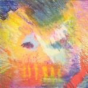

| Artist: | Ahvak |
| Title: | Ahvak |
| Label: | Cuneiform Records RUNE 185 |
| Length(s): | 53 minutes |
| Year(s) of release: | 2004 |
| Month of review: | [04/2004] |
| 1) | Vivisection | 8.28 |
| 2) | Bertha | 8.22 |
| 3) | Moments | 2.36 |
| 4) | Dust | 16.20 |
| 5) | Cement | 2.49 |
| 6) | Yawners | 13.27 |
| 7) | Ironworks | 0.55 |
Samples of Ahvak appear here by kind permission of Cuneiform Records.
Bertha is strange in that it combines a shrill trumpet like sound and something akin a banjo among the menacing, dissonant pacey RIO sound. In the intermezzo, the piano takes over and we hear a film spool running. The follow-up is dominated by keyboards, in which the melodies are more like tunes. Finally, the pace goes up again, with some nice percussively played piano, frantic like music for comical cartoons.
With Moments we enter a sparser area, in which occasional piano and flute are the main players (and even they do not play so much). After this short track we arrive at the title track, which translates from Hebrew as Dust. It opens with slow percussion, primordial. The guitar reverberates in the back (well, it sounds a bit like a guitar), while up front a flute and various sound effects play around. This part is mainly atmosphere. Then the pace and form stays the same, but the music is louder and more fleshed out. Reverberating sounds give the song a very special characters. Quick melodic piano runs come in as the music starts to work itself into a frenzy, albeit a shortlived one. Do not think however that is the last of the frenziness that we have heard, because they return with a vengeance later. I guess I tend to go for these climactic orgies of sound, where the complex lines are integrated and more fluently march on by. There are even some vocals on this one, but only little and quite warped. The spirit of Crimson is restless in this very dynamic track which goes from chaos to silence and constancy in a split second.
Cement is another shorty, with what seems to be one of 'unknown' instruments in occasional lead. The electric guitar also plays along here, but it stays a bit fragmented, yet tuneful.
Yawners is the final substantial track, and although I could go in detail about it, it features the same ingredients as the foregoing, with a tendency for the tuneful, with a strong element of playfulness. Around the ten minute mark we have more menace and more power, with the flute dominating.
Ironworks is the first short closer, mainly sounds of a sort.